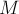
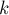
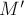
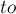
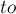
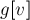
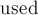

MAXimal
добавлено: 10 Jun 2008 23:01
редактировано: 15 Feb 2012 23:59
Содержание [скрыть]
Алгоритм Куна нахождения наибольшего паросочетания в двудольном графе
Дан двудольный граф  , содержащий
, содержащий  вершин и
вершин и  рёбер. Требуется найти наибольшее паросочетание, т.е. выбрать как можно больше рёбер, чтобы ни одно выбранное ребро не имело общей вершины ни с каким другим выбранным ребром.
рёбер. Требуется найти наибольшее паросочетание, т.е. выбрать как можно больше рёбер, чтобы ни одно выбранное ребро не имело общей вершины ни с каким другим выбранным ребром.
Описание алгоритма
Необходимые определения
Паросочетанием  называется набор попарно несмежных рёбер графа (иными словами, любой вершине графа должно быть инцидентно не более одного ребра из множества ). Мощностью паросочетания назовём количество рёбер в нём. Наибольшим (или максимальным) паросочетанием назовём паросочетание, мощность которого максимальна среди всех возможных паросочетаний в данном графе. Все те вершины, у которых есть смежное ребро из паросочетания (т.е. которые имеют степень ровно один в подграфе, образованном ), назовём насыщенными этим паросочетанием.
Цепью длины  назовём некоторый простой путь (т.е. не содержащий повторяющихся вершин или рёбер), содержащий рёбер.
Чередующейся цепью (в двудольном графе, относительно некоторого паросочетания) назовём цепь, в которой рёбра поочередно принадлежат/не принадлежат паросочетанию.
Увеличивающей цепью (в двудольном графе, относительно некоторого паросочетания) назовём чередующуюся цепь, у которой начальная и конечная вершины не принадлежат паросочетанию.
Теорема Бержа
Формулировка. Паросочетание является максимальным тогда и только тогда, когда не существует увеличивающих относительно него цепей.
Доказательство необходимости. Покажем, что если паросочетание максимально, то не существует увеличивающей относительно него цепи. Доказательство это будет конструктивным: мы покажем, как увеличить с помощью этой увеличивающей цепи  мощность паросочетания на единицу.
мощность паросочетания на единицу.
Для этого выполним так называемое чередование паросочетания вдоль цепи . Мы помним, что по определению первое ребро цепи не принадлежит паросочетанию, второе — принадлежит, третье — снова не принадлежит, четвёртое — принадлежит, и т.д. Давайте поменяем состояние всех рёбер вдоль цепи : те рёбра, которые не входили в паросочетание (первое, третье и т.д. до последнего) включим в паросочетание, а рёбра, которые раньше входили в паросочетание (второе, четвёртое и т.д. до предпоследнего) — удалим из него.
Понятно, что мощность паросочетания при этом увеличилась на единицу (потому что было добавлено на одно ребро больше, чем удалено). Осталось проверить, что мы построили корректное паросочетание, т.е. что никакая вершина графа не имеет сразу двух смежных рёбер из этого паросочетания. Для всех вершин чередующей цепи , кроме первой и последней, это следует из самого алгоритма чередования: сначала мы у каждой такой вершины удалили смежное ребро, потом добавили. Для первой и последней вершины цепи также ничего не могло нарушиться, поскольку до чередования они должны были быть ненасыщенными. Наконец, для всех остальных вершин, — не входящих в цепь , — очевидно, ничего не поменялось. Таким образом, мы в самом деле построили паросочетание, и на единицу большей мощности, чем старое, что и завершает доказательство необходимости.
Доказательство достаточности. Докажем, что если относительно некоторого паросочетания нет увеличивающих путей, то оно — максимально.
Доказательство проведём от противного. Пусть есть паросочетание , имеющее бОльшую мощность, чем . Рассмотрим симметрическую разность  этих двух паросочетаний, т.е. оставим все рёбра, входящие в или в , но не в оба одновременно.
этих двух паросочетаний, т.е. оставим все рёбра, входящие в или в , но не в оба одновременно.
Понятно, что множество рёбер — уже наверняка не паросочетание. Рассмотрим, какой вид это множество рёбер имеет; для удобства будем рассматривать его как граф. В этом графе каждая вершина, очевидно, имеет степень не выше 2 (потому что каждая вершина может иметь максимум два смежных ребра — из одного паросочетания и из другого). Легко понять, что тогда этот граф состоит только из циклов или путей, причём ни те, ни другие не пересекаются друг с другом.
Теперь заметим, что и пути в этом графе могут быть не любыми, а только чётной длины. В самом деле, в любом пути в графе рёбра чередуются: после ребра из идёт ребро из , и наоборот. Теперь, если мы рассмотрим какой-то путь нечётной длины в графе , то получится, что в исходном графе это будет увеличивающей цепью либо для паросочетания , либо для . Но этого быть не могло, потому что в случае паросочетания это противоречит с условием, а в случае — с его максимальностью (ведь мы уже доказали необходимость теоремы, из которой следует, что при существовании увеличивающей цепи паросочетание не может быть максимальным).
Докажем теперь аналогичное утверждение и для циклов: все циклы в графе могут иметь только чётную длину. Это доказать совсем просто: понятно, что в цикле рёбра также должны чередоваться (принадлежать по очереди то , то ), но это условие не может выполниться в цикле нечётной длины — в нём обязательно найдутся два соседних ребра из одного паросочетания, что противоречит определению паросочетания.
Таким образом, все пути и циклы графа имеют чётную длину. Следовательно, граф содержит равное количество рёбер из и из . Но, учитывая, что в содержатся все рёбра и , за исключением их общих рёбер, то отсюда следует, что мощность и совпадают. Мы пришли к противоречию: по предположению паросочетание было не максимальным, значит, теорема доказана.
Алгоритм Куна
Алгоритм Куна — непосредственное применение теоремы Бержа. Его можно кратко описать так: сначала возьмём пустое паросочетание, а потом — пока в графе удаётся найти увеличивающую цепь, — будем выполнять чередование паросочетания вдоль этой цепи, и повторять процесс поиска увеличивающей цепи. Как только такую цепь найти не удалось — процесс останавливаем, — текущее паросочетание и есть максимальное.
Осталось детализировать способ нахождения увеличивающих цепей. Алгоритм Куна — просто ищет любую из таких цепей с помощью обхода в глубину или в ширину. Алгоритм Куна просматривает все вершины графа по очереди, запуская из каждой обход, пытающийся найти увеличивающую цепь, начинающуюся в этой вершине.
Удобнее описывать этот алгоритм, считая, что граф уже разбит на две доли (хотя на самом деле алгоритм можно реализовать и так, чтобы ему не давался на вход граф, явно разбитый на две доли).
Алгоритм просматривает все вершины  первой доли графа: . Если текущая вершина уже насыщена текущим паросочетанием (т.е. уже выбрано какое-то смежное ей ребро), то эту вершину пропускаем. Иначе — алгоритм пытается насытить эту вершину, для чего запускается поиск увеличивающей цепи, начинающейся с этой вершины.
первой доли графа: . Если текущая вершина уже насыщена текущим паросочетанием (т.е. уже выбрано какое-то смежное ей ребро), то эту вершину пропускаем. Иначе — алгоритм пытается насытить эту вершину, для чего запускается поиск увеличивающей цепи, начинающейся с этой вершины.
Поиск увеличивающей цепи осуществляется с помощью специального обхода в глубину или ширину (обычно в целях простоты реализации используют именно обход в глубину). Изначально обход в глубину стоит в текущей ненасыщенной вершине первой доли. Просматриваем все рёбра из этой вершины, пусть текущее ребро — это ребро  . Если вершина  ещё не насыщена паросочетанием, то, значит, мы смогли найти увеличивающую цепь: она состоит из единственного ребра ; в таком случае просто включаем это ребро в паросочетание и прекращаем поиск увеличивающей цепи из вершины . Иначе, — если уже насыщена каким-то ребром , то попытаемся пройти вдоль этого ребра: тем самым мы попробуем найти увеличивающую цепь, проходящую через рёбра , . Для этого просто перейдём в нашем обходе в вершину
. Если вершина  ещё не насыщена паросочетанием, то, значит, мы смогли найти увеличивающую цепь: она состоит из единственного ребра ; в таком случае просто включаем это ребро в паросочетание и прекращаем поиск увеличивающей цепи из вершины . Иначе, — если уже насыщена каким-то ребром , то попытаемся пройти вдоль этого ребра: тем самым мы попробуем найти увеличивающую цепь, проходящую через рёбра , . Для этого просто перейдём в нашем обходе в вершину  — теперь мы уже пробуем найти увеличивающую цепь из этой вершины.
— теперь мы уже пробуем найти увеличивающую цепь из этой вершины.
Можно понять, что в результате этот обход, запущенный из вершины , либо найдёт увеличивающую цепь, и тем самым насытит вершину , либо же такой увеличивающей цепи не найдёт (и, следовательно, эта вершина уже не сможет стать насыщенной).
После того, как все вершины будут просмотрены, текущее паросочетание будет максимальным.
Время работы
Итак, алгоритм Куна можно представить как серию из запусков обхода в глубину/ширину на всём графе. Следовательно, всего этот алгоритм исполняется за время  , что в худшем случае есть
, что в худшем случае есть  .
.
Однако эту оценку можно немного улучшить. Оказывается, для алгоритма Куна важно то, какая доля выбрана за первую, а какая — за вторую. В самом деле, в описанной выше реализации запуски обхода в глубину/ширину происходят только из вершин первой доли, поэтому весь алгоритм исполняется за время , где — число вершин первой доли. В худшем случае это составляет (где — число вершин второй доли). Отсюда видно, что выгоднее, когда первая доля содержит меньшее число вершин, нежели вторая. На очень несбалансированных графах (когда и сильно отличаются) это выливается в значительную разницу времён работы.
Реализация
Приведём здесь реализацию вышеописанного алгоритма, основанную на обходе в глубину, и принимающей двудольный граф в виде явно разбитого на две доли графа. Эта реализация весьма лаконична, и, возможно, её стоит запомнить именно в таком виде.
Здесь — число вершин в первой доле, — во второй доле,  — список рёбер из вершины первой доли (т.е. список номеров вершин, в которые ведут эти рёбра из ). Вершины в обеих долях занумерованы независимо, т.е. первая доля — с номерами  , вторая — с номерами .
, вторая — с номерами .
Дальше идут два вспомогательных массива: и . Первый — — содержит в себе информацию о текущем паросочетании. Для удобства программирования, информация эта содержится только для вершин второй доли: — это номер вершины первой доли, связанной ребром с вершиной  второй доли (или
второй доли (или  , если никакого ребра паросочетания из не выходит). Второй массив — — обычный массив "посещённостей" вершин в обходе в глубину (он нужен, просто чтобы обход в глубину не заходил в одну вершину дважды).
, если никакого ребра паросочетания из не выходит). Второй массив — — обычный массив "посещённостей" вершин в обходе в глубину (он нужен, просто чтобы обход в глубину не заходил в одну вершину дважды).
Функция — и есть обход в глубину. Она возвращает  , если ей удалось найти увеличивающую цепь из вершины , при этом считается, что эта функция уже произвела чередование паросочетания вдоль найденной цепи.
, если ей удалось найти увеличивающую цепь из вершины , при этом считается, что эта функция уже произвела чередование паросочетания вдоль найденной цепи.
Внутри функции просматриваются все рёбра, исходящие из вершины первой доли, и затем проверяется: если это ребро ведёт в ненасыщенную вершину , либо если эта вершина насыщена, но удаётся найти увеличивающую цепь рекурсивным запуском из ![\rm mt[to]](../tex2png/cache/85516da918195bd0987acc68a5c35748.png) , то мы говорим, что мы нашли увеличивающую цепь, и перед возвратом из функции с результатом производим чередование в текущем ребре: перенаправляем ребро, смежное с , в вершину .
, то мы говорим, что мы нашли увеличивающую цепь, и перед возвратом из функции с результатом производим чередование в текущем ребре: перенаправляем ребро, смежное с , в вершину .
В основной программе сначала указывается, что текущее паросочетание — пустое (список заполняется числами ). Затем перебирается вершина первой доли, и из неё запускается обход в глубину , предварительно обнулив массив .
Стоит заметить, что размер паросочетания легко получить как число вызовов в основной программе, вернувших результат . Само искомое максимальное паросочетание содержится в массиве .
int n, k; vector < vector<int> > g; vector<int> mt; vector<char> used; bool try_kuhn (int v) { if (used[v]) return false; used[v] = true; for (size_t i=0; i<g[v].size(); ++i) { int to = g[v][i]; if (mt[to] == -1 || try_kuhn (mt[to])) { mt[to] = v; return true; } } return false; } int main() { ... чтение графа ... mt.assign (k, -1); for (int v=0; v<n; ++v) { used.assign (n, false); try_kuhn (v); } for (int i=0; i<k; ++i) if (mt[i] != -1) printf ("%d %d\n", mt[i]+1, i+1); }
Ещё раз повторим, что алгоритм Куна легко реализовать и так, чтобы он работал на графах, про которые известно, что они двудольные, но явное их разбиение на две доли не найдено. В этом случае придётся отказаться от удобного разбиения на две доли, и всю информацию хранить для всех вершин графа. Для этого массив списков  теперь задаётся не только для вершин первой доли, а для всех вершин графа (понятно, теперь вершины обеих долей занумерованы в общей нумерации — от
теперь задаётся не только для вершин первой доли, а для всех вершин графа (понятно, теперь вершины обеих долей занумерованы в общей нумерации — от  до ). Массивы и теперь также определены для вершин обеих долей, и, соответственно, их нужно поддерживать в этом состоянии.
до ). Массивы и теперь также определены для вершин обеих долей, и, соответственно, их нужно поддерживать в этом состоянии.
Улучшенная реализация
Модифицируем алгоритм следующим образом. До основного цикла алгоритма найдём каким-нибудь простым алгоритмом произвольное паросочетание (простым эвристическим алгоритмом), и лишь затем будем выполнять цикл с вызовами функции kuhn(), который будет улучшать это паросочетание. В результате алгоритм будет работать заметно быстрее на случайных графах — потому что в большинстве графов можно легко набрать паросочетание достаточно большого веса с помощью эвристики, а потом улучшить найденное паросочетание до максимального уже обычным алгоритмом Куна. Тем самым мы сэкономим на запусках обхода в глубину из тех вершин, которые мы уже включили с помощью эвристики в текущее паросочетание.
Например, можно просто перебрать все вершины первой доли, и для каждой из них найти произвольное ребро, которое можно добавить в паросочетание, и добавить его. Даже такая простая эвристика способна ускорить алгоритм Куна в несколько раз.
Следует обратить внимание на то, что основной цикл придётся немного модифицировать. Поскольку при вызове функции в основном цикле предполагается, что текущая вершина ещё не входит в паросочетание, то нужно добавить соответствующую проверку.
В реализации изменится только код в функции main():
int main() { ... чтение графа ... mt.assign (k, -1); vector<char> used1 (n); for (int i=0; i<n; ++i) for (size_t j=0; j<g[i].size(); ++j) if (mt[g[i][j]] == -1) { mt[g[i][j]] = i; used1[i] = true; break; } for (int i=0; i<n; ++i) { if (used1[i]) continue; used.assign (n, false); try_kuhn (i); } for (int i=0; i<k; ++i) if (mt[i] != -1) printf ("%d %d\n", mt[i]+1, i+1); }
Другой хорошей эвристикой является следующая. На каждом шаге будет искать вершину наименьшей степени (но не изолированную), из неё выбирать любое ребро и добавлять его в паросочетание, затем удаляя обе эти вершины со всеми инцидентными им рёбрами из графа. Такая жадность работает очень хорошо на случайных графах, даже в большинстве случаев строит максимальное паросочетание (хотя и против неё есть тест, на котором она найдёт паросочетание значительно меньшей величины, чем максимальное).